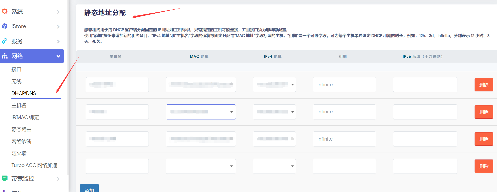

硬路由（2）—— 系统调优 & 局域网组网
写在前面
有些固件会自带 Turbo ACC 网络加速软件包，请保持默认配置，不要勾选MTK 无线硬件加速、BBR 拥塞控制算法以及DNS 缓存选项，否则会导致路由器无法行使正常功能。
重要提示： 安装的固件当中预装的软件包一般与内核版本与固件绑定，相互的依赖关系十分复杂，更新软件包前请慎重。请勿更新 OpenWrt 内核。 如果你的 OpenWrt 系统因软件包更新与内核等依赖出现了问题，建议将系统恢复出厂设置，这样是最快并且最简洁的解决方式。
如果还能通过 SSH 等方式打开路由器终端，请输入以下命令：
1 | firstboot |
重启后路由器即恢复原样，按照说明重新配置一遍即可。
基础配置
为了安全起见，建议在系统 - 管理权处重新设置管理员密码。
由于192.168.1.1地址可能会与运营商设备产生冲突，建议在网络 - 接口 - LAN处设置协议为静态协议，IPv4 地址为其他地址。
同时在系统 - Web 管理处将 HTTP 监听地址更改为新的 LAN 口地址。
OpenWrt 采用的包管理器为 opkg。在执行后续操作时，请先根据 WAN 接口配置以及下一章节：校园网 & L2TP / 网页认证部分，确保路由器能够访问公网。在服务 - 终端处登录root，输入：
1 | opkg update |
来进行包的更新。如果无法更新，请尝试更换镜像源。
更换镜像源的方法：在服务 - 终端处登录root，输入：
1 | cd /etc/opkg |
根据软件版本替换镜像源。笔者的配置：
1 | src/gz openwrt_core https://mirrors.tuna.tsinghua.edu.cn/openwrt/releases/24.10.0/targets/mediatek/filogic/packages |
如果遇到无法拉取 HTTPS 源的情况，请先使用 HTTP 源更新包列表，并安装：
1 | opkg install ca-bundle ca-certificates |
同时确保内核模块中有对 SSL 的支持（如 mbedtls 或 openssl）。
替换完成后，再次输入
1 | opkg update |
以更新 opkg 源。
LAN 接口配置
在网络 - 接口 - 设备 - br-lan - 配置处确认网桥端口是否包括了所有有线端口。
在无线 Master 模式配置中确认网络是否被指派到 lan 接口。
WAN 接口配置
在网络 - 接口 - WAN - 基本设置处
如果没有给路由器预先分配好的静态 IP，一般采用 DHCP 客户端协议。本文不涉及 PPPoE 拨号上网。
无线配置
常用的无线模式有以下两种：
- 接入点 AP（Access Point）：最常见的模式，能将有线信号转变为无线 WiFi 信号，能够设置 WiFi 的 SSID，认证方式等
- 客户端（Client）：将路由器当成无线网卡使用，能接收无线信号，通过有线方式传递出去，可以在路由器配置阶段临时使用，较为方便
在网络 - 无线 - 对应无线网络处配置。在无线安全处设置认证方式。
临时给路由器共享网络
有线方式
使用网线连接电脑与路由器。将电脑的有线网卡与路由器 WAN 口均配置为静态地址。
有线共享网络方法：
-
在路由器的
网络 – 接口 - WAN页面中修改为静态 IP，IP 地址是 192.168.3.2，子网掩码 255.255.255.0，网关 192.168.3.1，其它留空即可，保存应用。 -
电脑的有线口连接路由器的 Wan 口，电脑的无线连接其它可以上网的 Wi-Fi（不能是一会要使用的手机的热点，否则还需要一个设备）。
-
进入
控制面板 - 网络和共享中心 - 更改适配器设置，在弹出的窗口中右击WLAN – 属性，在上面点击共享，首先在下面的下拉框中选择你的有线网卡（一般是以太网），再勾选允许其他网络用户通过此计算机的 Internet 连接来连接。如果弹出任何对话框请确定。 -
在网络连接的窗口右击
以太网–属性，往下找到 Internet 协议版本 4，双击，点击“使用下面的 IP 地址”，修改地址为192.168.3.1，子网掩码 255.255.255.0，确定即可。
无线方式
在网络 - 无线 - 无线概况中点击对应频段的扫描按钮，并连接对应无线网络即可。对于路由器连接校内 WiFi，请参照硬路由（3）—— 校园网 & 认证方案对应部分。
静态地址分配
对于长期处于路由器下局域网的设备，如果我们希望该设备在局域网中的 IP 地址不发生改变，而对于其他临时加入局域网的设备采取 DHCP 方式分配 IP 地址，我们可以在路由器端设置静态地址分配，即对于同一个物理设备（MAC 地址相同），我们创建一个无限期（infinite）的 DHCP 租约，即可实现需求。
在网络 - DHCP/DNS - 静态地址分配处添加静态租约，填写主机名，MAC 地址，IPv4 地址，租期。

如果设备已经被 DHCP 分配地址，可以重新连接路由器以获得永久（或自定义时长）租约。
软件包
这里是一些比较推荐安装的软件包。可以选择在编译时加入或是通过 opkg 安装。
TTYD 终端
TTYD 是一个简单的命令行工具，用于在网络上共享终端。
安装luci-app-ttyd（汉化包为luci-i18n-ttyd-zh-cn）。
设置自动登录
编辑/etc/config/ttyd文件：
1 | vim /etc/config/ttyd |
修改为如下内容：
1 | config ttyd |
保存后重启 TTYD 生效：
1 | /etc/init.d/ttyd reload |
UPnP
通用即插即用（Universal Plug and Play），UPnP 规范是基于 TCP/IP 协议和针对设备彼此间通讯而制定的新的 Internet 协议。一个 UPnP 设备能够自动连接上网络，并自动获取一个 IP 地址，传送出自己的权限并获得其他已经连接上的设备及权限，控制网络设备及在他们之间传输信息。还可以自动顺利切断网络连接，不会干扰到其他设备的连接。（支持零设置、网络连接过程中可见、自动查找各种不同类型的设备、没有设备驱动程序，取而代之的是普通的协议）
UPnP 为 NAT（网络地址转换）穿透带来了一个解决方案：互联网网关设备协议（IGD）。NAT 穿透允许 UPnP 数据包在没有用户交互的情况下，无障碍的通过路由器或者防火墙（假如那个路由器或者防火墙支持 NAT）。后来还发展出了 NAT-PMP（NAT Port Mapping Protocol，NAT 端口映射协议）以及 PCP（Port Control Protocol，端口控制协议）。现在我们统称为 UPnP IGD & PCP/NAT-PMP。
安装luci-app-upnp（汉化包为luci-i18n-upnp-zh-cn）。如果出现内核依赖不满足，请在编译时加入缺失的内核模块。
无法添加端口转发规则问题
miniupnpd 的 2.2 版本及以后，会检测外部接口上的 IP 地址。如果不存在公网 IP，则会拒绝添加端口转发规则。以下方案来源于这篇文章。
我们可以添加真实的外部 IP，使用 Hotplug 脚本，在每次网络接口更新时，自动检测外部 IP 并添加至 /etc/config/upnpd：
1 | vim /etc/hotplug.d/iface/05-miniupnpd-external-ip |
粘贴入以下内容：
1 | [ "$ACTION" = "ifup" ] && [ "$INTERFACE" = "wan" ] && \ |
MiniUPnPd 本身会创建一个文件名为 50-miniupnpd 的 Hotplug 脚本，其最后会重启 MiniUPnPd，因此把指定外部 IP 的脚本放在其之前执行，可以减少一次 MiniUPnPd 的重启。
Hotplug 脚本的执行顺序基于文件名，因此使用05-miniupnpd-external-ip。示例脚本仅在wan接口更新时才执行检测和添加，请改成你实际的外部接口名称。也可以把[ "$INTERFACE" = "wan" ] &&部分删除，则会在任意接口更新时都执行脚本。
示例脚本使用curl -Ls 4.ipw.cn检测外部 IP，请确保你的 OpenWrt 有安装curl。如有必要，4.ipw.cn可以更换成其他可获得外部 IP 的 URL。
以上命令仅添加 Hotplug 脚本，需在 wan 接口更新时才触发。如要马上启用 MiniUPnPd 的端口转发规则，请执行：
1 | /etc/init.d/miniupnpd restart |
以上 Hotplug 脚本在刷写固件后会被删除。如要保留，请打开系统 - 备份与升级 - 配置，把/etc/hotplug.d/iface/05-miniupnpd-external-ip添加至列表中。

下一章节：校园网 & 认证方案